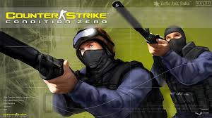

Counter-Strike: Source var ekki fyrsti tölvuleikurinn sem varð vinsæl rafíþrótt, sá titill á líklegast StarCraft vegna frægðar hans í Kóreu á níunda áratuginum. En Source varð snemma fordæmi um hverning rafíþróttir myndu þróast og menningin sem fylgdi. Stærstu Counter-Strike:Source mótin fengu tug-þúsundir áhorfendur og voru haldin í stórum höllum með töluverðann mannsfjölda að fylgjast með. Sumir bestu leikmenn í Counter-Strike í dag eiga uppruna sinn í Source.
Í Nóvember 2004 kom út endurbætt utgáfa af Counter-Strike sem fékk nafnið "Source" fyrir leikjavélina sem leikurinn var þá byggður á. Source átti það fram yfir eldri útgáfum að vera keyrður á glænýrri leikjavél ValvE "Source" vélin, þar að leiðandi voru gæðin talvert betri, leikurinn varð vænari nýjum kynslóðum af tölvum og gat keyrt meira efni. Source kynnti leikmönnum fyrir fjöldan allann af nýjum vopnum, leikvöngum og modelum sem voru notuð.
Í Mars 2004 kom út kom út önnur, óþekktari útgáfa af Counter-Strike sem nefndist "Condition Zero", leikurinn nýtti ekki mikillra vinsælda og enda kom út vinsælari útgáfan út aðeins 8 mánuðum síðar.
